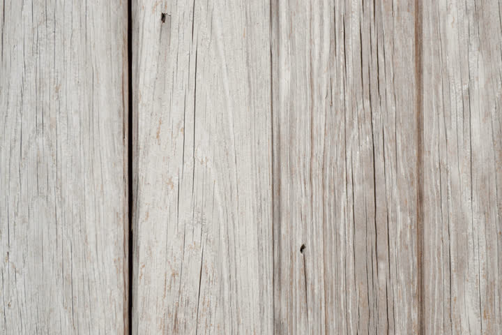
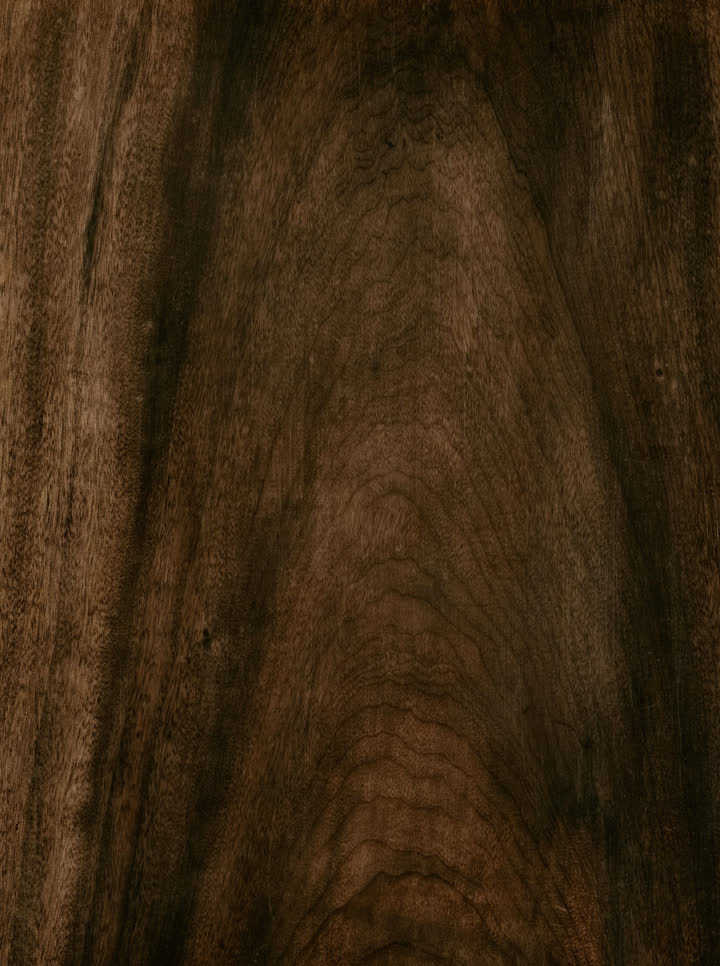
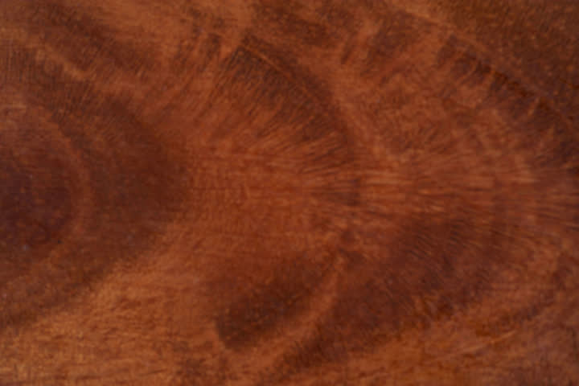
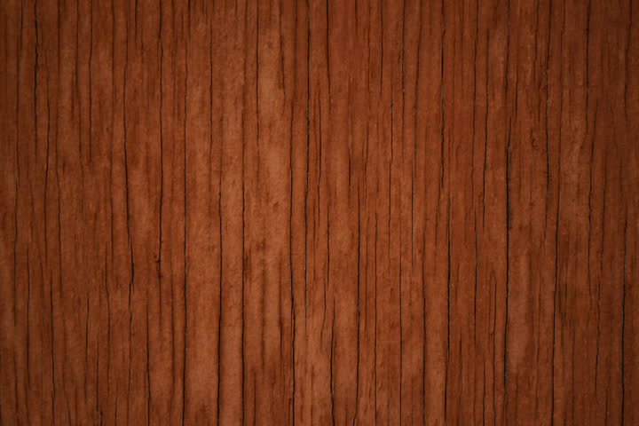
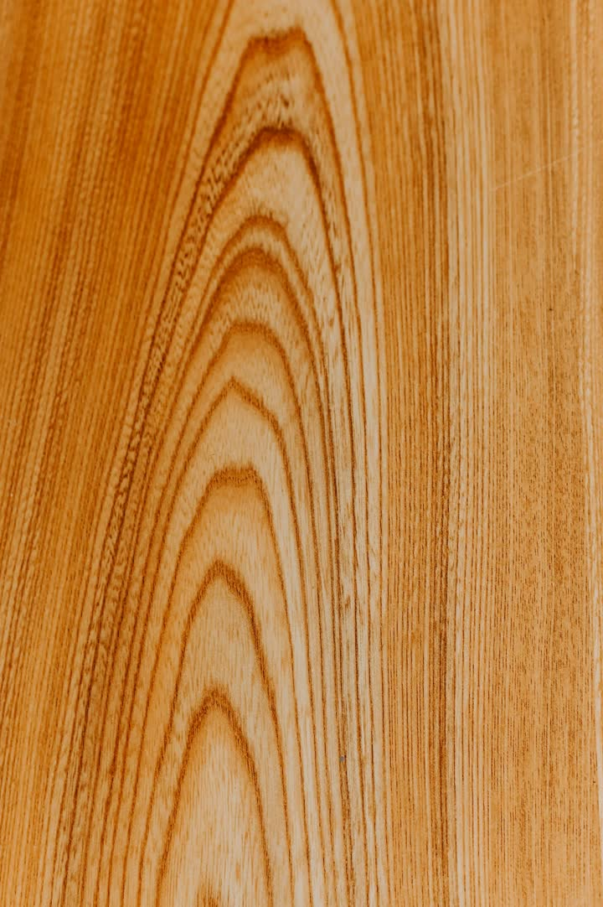
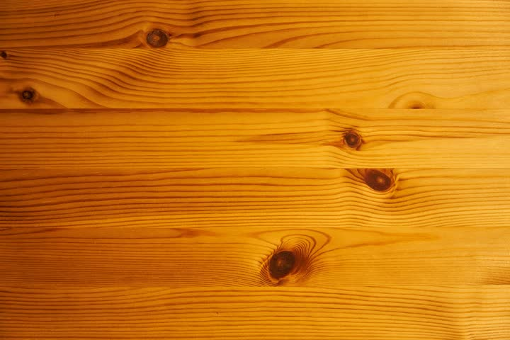
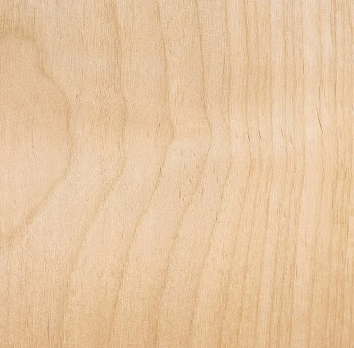
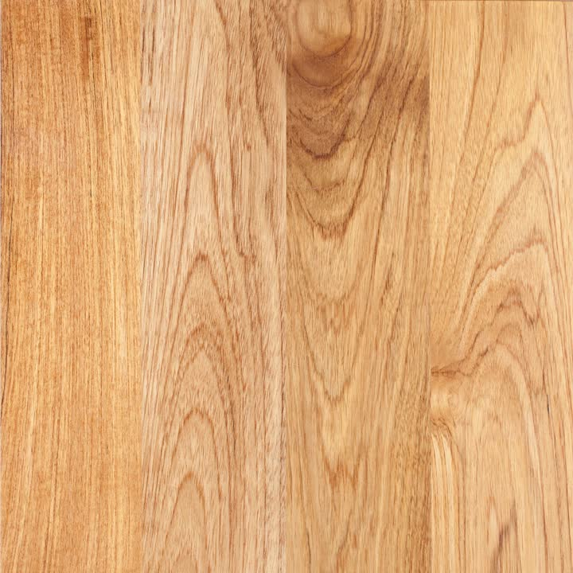
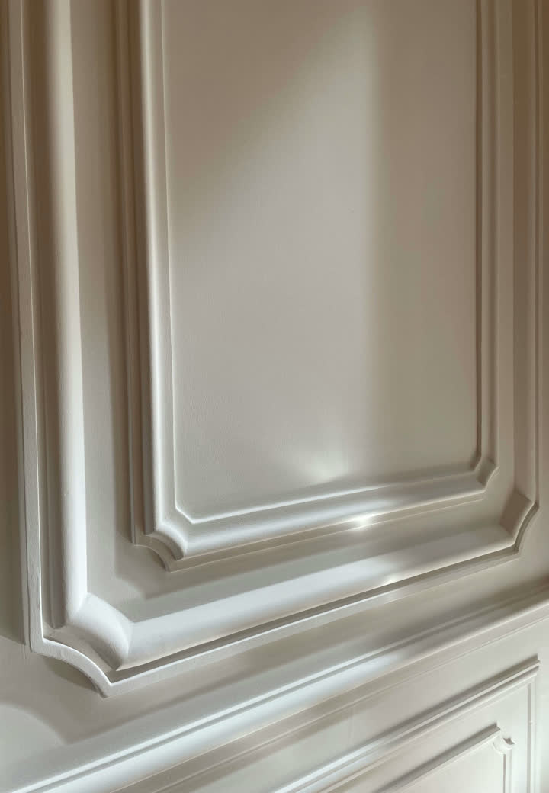

The Guide to Everything We Make
Wood species, stain colors, paint finishes, and hardware patinas — every option we offer, in one place. Order a sample pack to feel the difference before you commit.
Order a Sample Pack — $3520+ Species. We'll Help You Choose the Right One.

Open grain, warm tone, pronounced ray flecks. Our most popular species. Takes stain beautifully.

Rich chocolate brown with purple undertones. America's luxury hardwood. No stain needed.

Light pink when fresh-cut, deepens to a warm reddish-brown over time. Fine, smooth grain.

Straight grain, excellent dimensional stability, outstanding weather resistance. Premier exterior species.

Dense, tight grain. Light color that accepts paint perfectly or can be used natural for a clean, contemporary look.

Our paint-grade standard. Mills cleanly, accepts primer and paint without bleeding, holds shape reliably.

Light, uniform grain. Often used as a paintable stain-grade species — accepts dark stains evenly.

Strong, dimensional, with warm golden grain. Classic exterior species used in traditional and craftsman homes.
Standard Stain Palette
Shown on White Oak. Appearance varies by species — order samples to see on your chosen wood.

Custom stain matching available. Send us a finish chip or reference and we'll produce a matched sample within 5 business days.
Popular Painted Finishes
We paint to any Benjamin Moore or Sherwin-Williams color. These are our most frequently specified.

Any BM or SW color available. Custom colors and Farrow & Ball matching available for design clients.